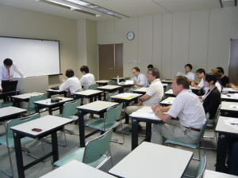
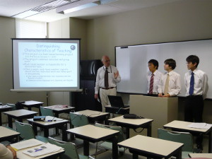

Software Engineering Lab joined the Program for Leading Edge IT Specialists organized by our university in 2007. We offered students a project on Summarizing Tools for General Purpose Search Engines. A team-based way of education and research is a new style of teaching for us. The first international group of students consisting of Japanese and Russian students successfully completed the program of the study in the autumn of 2009.


Master Thesis Presentation
Distinguished characteristics of the teaching:
The project combined individual and group work.
Each team member was responsible for a dedicated topic.
Once a week, each team member reported about his/her individual work and took part in discussions.
Rotation of Project Manager Position
The role of each team member for each month:
Two members were software engineers: They were responsible for coding and they prepared other materials related to software development.
One team member was a manager: He was responsible for the management of the project.
Once a month, the functional roles were rotated, so once in three months, everyone was responsible for the management activity.
Role of the Special Activities
We pioneered in three types of activities.
Tea seminars: Series of meetings with our consulters and evaluators (Prof. Kendall E. Nygard, USA and Prof. Mark Sifer, Australia) and with our partner team in the relaxing atmosphere.
Conference participation: Every member presented a talk at the international conference overseas.
Weekly group meetings: Strong internal criticism during discussions.
Lessons Learned
The problems which should be taken into account our successors:
Background of each member
Development of the students as independent researchers
Assessment
Self-organizing team
Job hunting
Concluding remarks by Coach on the day of Master Thesis Presentation, August 13, 2009. Download here.
Program for Leading Edge IT Specialists
2007年、Program for Leading Edge IT Specialistsに参加し、研究室の学生に対して、検索エンジンの一般的な目的のためのツールのまとめるように提案しました。学期ごとの教育や研究は私たちに取って新しいスタイルであり、最初のグループは日本人とロシア人で構成され、彼らは2009年秋にこのプログラムを成功させました。